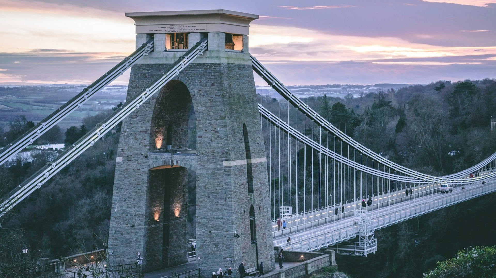
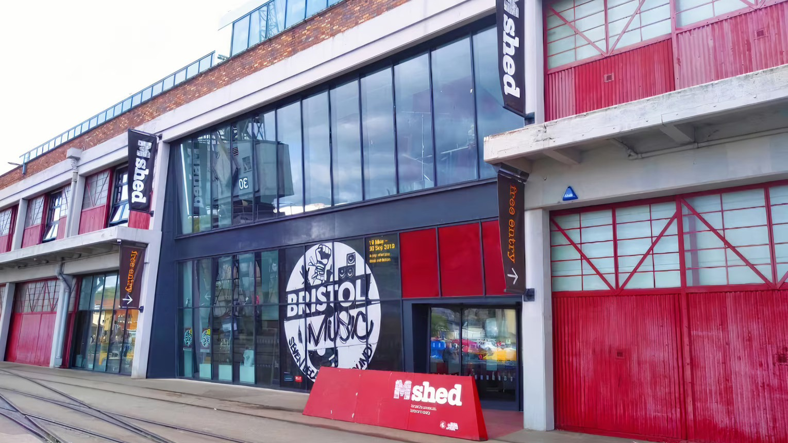
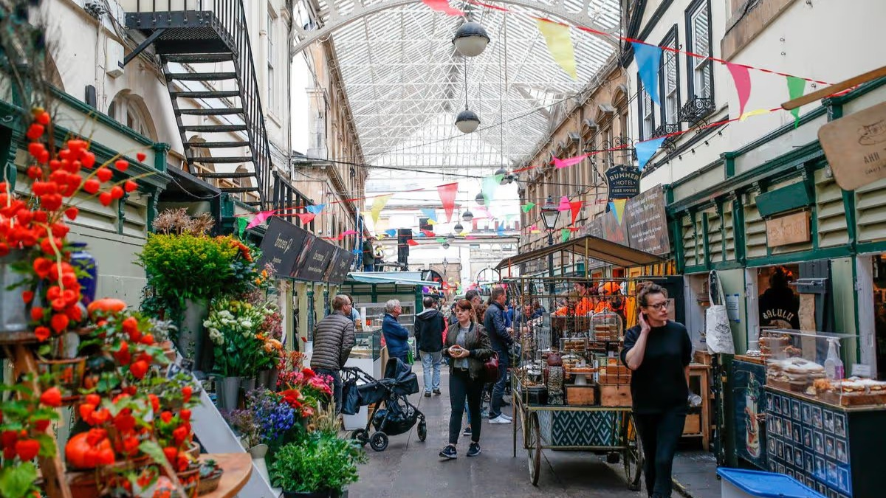

Places to Visit

Clifton Suspension Bridge
Clifton Suspension Bridge is one of Bristol's most famous landmarks. It offers beautiful views of the Avon Gorge and is a great place to visit and take photos.
Entry Fee: Free (walking and cycling)
Cabot Tower
Cabot Tower is a historic tower in Brandon Hill Park. Visitors can climb to the top for beautiful views of Bristol and the surrounding area.
Entry Fee: Free

M Shed
M Shed is a museum about Bristol's history and people. Visitors can explore interesting exhibitions and learn how the city has changed over time.
Entry Fee: Free

St Nicholas Market
St Nicholas Market is a historic indoor market in Bristol. Visitors can enjoy street food, explore independent shops and discover unique gifts.
Entry Fee: Free
Plan Your Visit
| Attraction | Address | Opening Hours | More Information |
|---|---|---|---|
| Clifton Suspension Bridge | Address: Bridge Road, Bristol, BS8 3PA | Opening Hours: Open 24 hours (pedestrian access) | More Information: Visit Website |
| Cabot Tower | Address: Brandon Hill, Bristol, BS1 5RR | Opening Hours: 8 am – seasonal closing times | More Information: Visit Website |
| M Shed | Address: Princes Wharf, Wapping Road, Bristol, BS1 4RN | Opening Hours: Tue – Sun: 10 am – 5 pm (Closed Mon) | More Information: Visit Website |
| St Nicholas Market | Address:Corn Street, Bristol, BS1 1JQ | Opening Hours: Mon – Sat: 9:30 am – 5 pm (Closed Sun) | More Information: Visit Website |